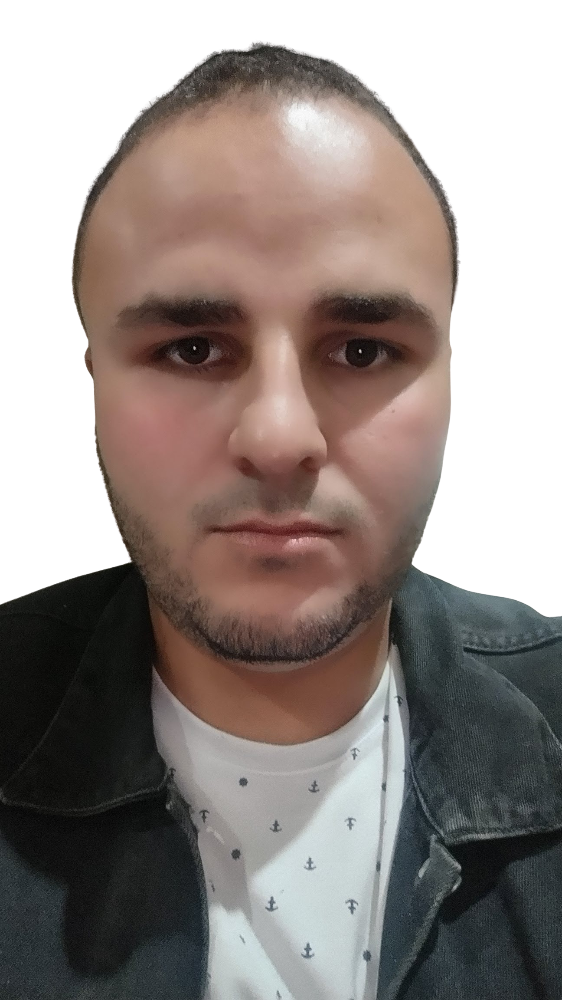

Pós-graduação em Gestão Escolar
IFTM 2023 - 2023
Licenciatura em Computação
IFTM - Instituto Federal do Triângulo Mineiro 2017 - 2022

Bom gostaria de trabalhar na área da educação e também na área da tecnologia para paracontribuir e ajudar as pessoas com necessidades especiais assim como eu.
Pós-graduação em Gestão Escolar
IFTM 2023 - 2023
Licenciatura em Computação
IFTM - Instituto Federal do Triângulo Mineiro 2017 - 2022
Orientador Educacional (PIBID)
Período: 2017 a 2018